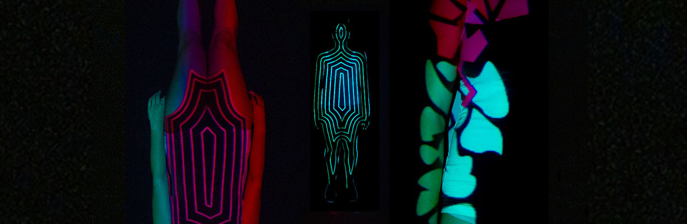

Project: Creation of a video clip for a web-series « immune-logique ». The aim was the reassure and inform the French population about the importance of the vaccination.

Description: The Mapping design allows us to make the invisible visible. The projection shows the streams flowing across the body. The clip tells the process of the vaccine inside ourselves. There is a color distinction according to the different nature of streams.
 Download video 1 Download video 2Purpose: Informing and popularization is the issue between science and design’s relationship. The historical visual communication of Geigy pharmaceutical company is very relevant for the formal language simplicity. Indeed it allows to clarify and make the message universal. However, the doctor and graphist Fritz Khan is giving us a figurative and playful graphic representation of the human anatomy. His metaphorical vision of the human body as a machine, helps his patients understand better how their body works. In this framework, the work of a graphic designer brings sensibility and poetry to science. The vaccination works the same way as the graphic design in the idea of a synthetic process. Science wants to hierarchize, implement a strategy to take concrete actions. Therefore that brings the parallel between the transmission of a message in the visual rhetoric.